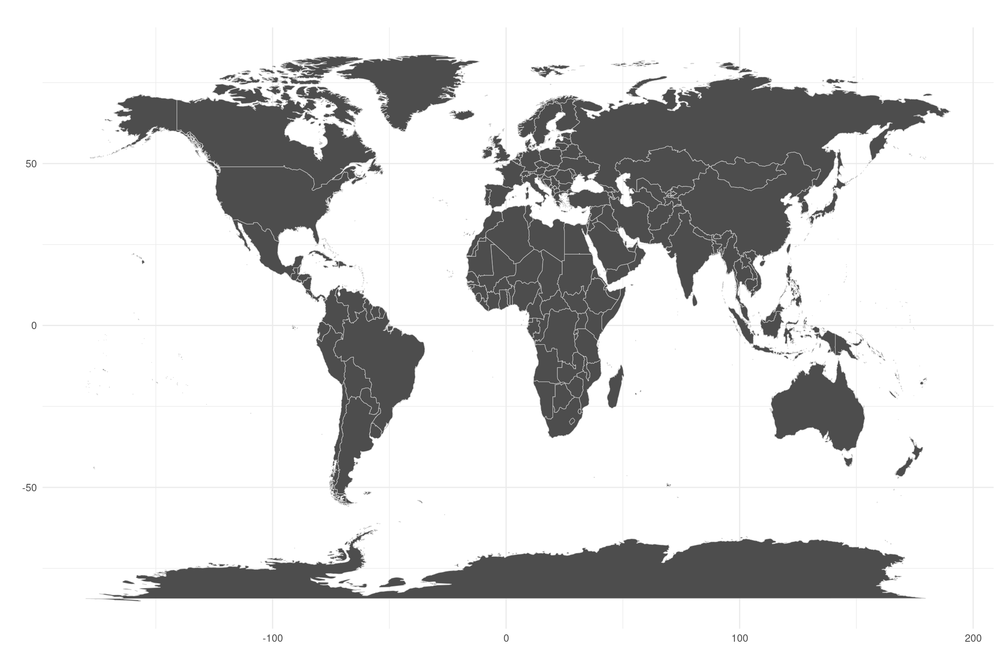
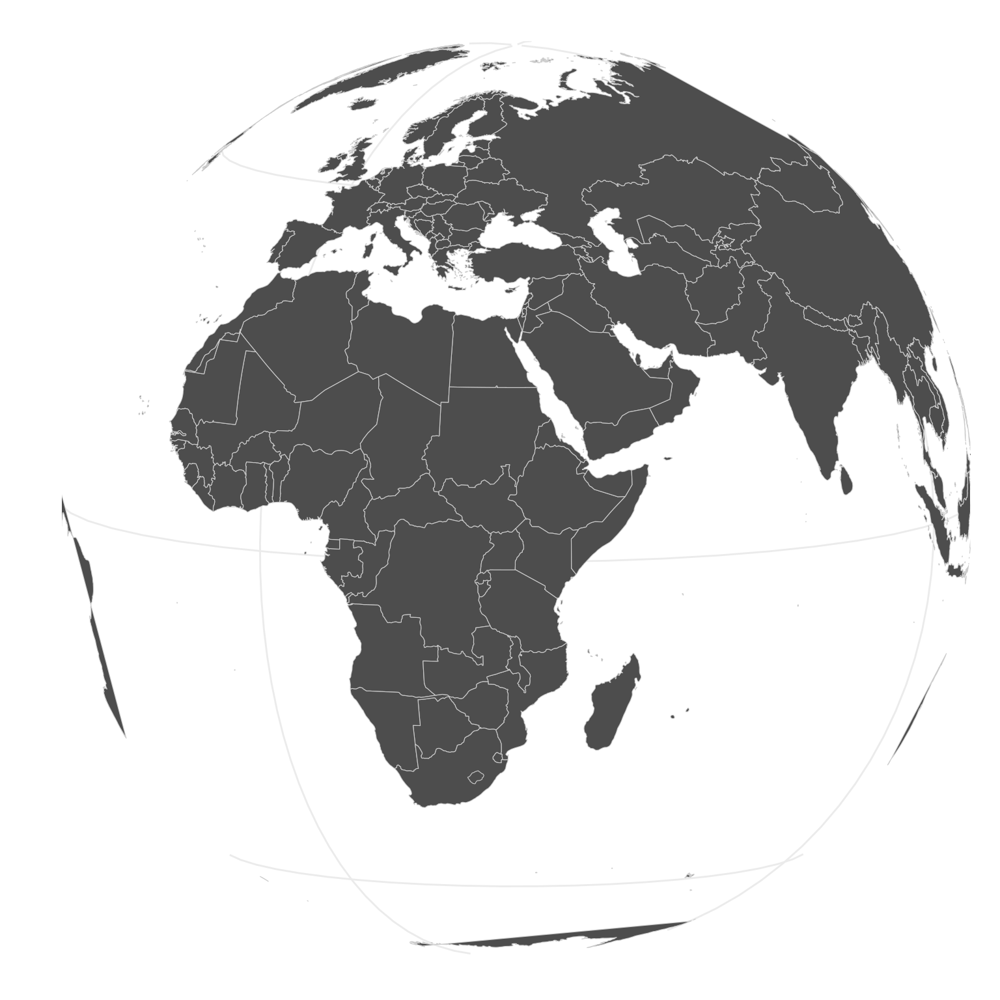
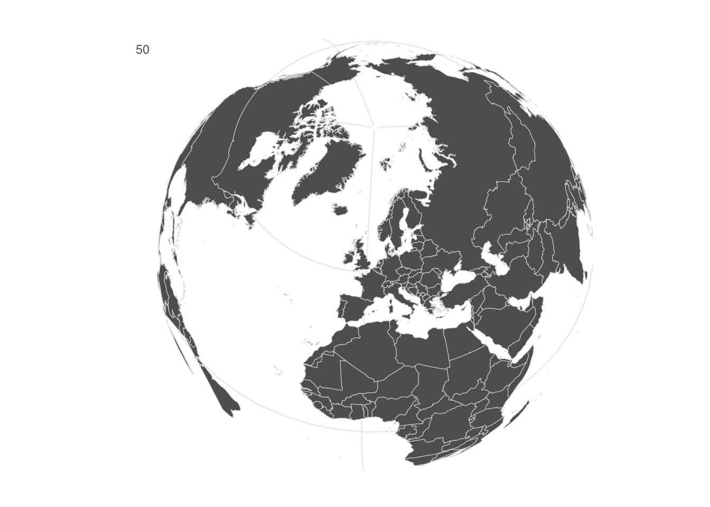
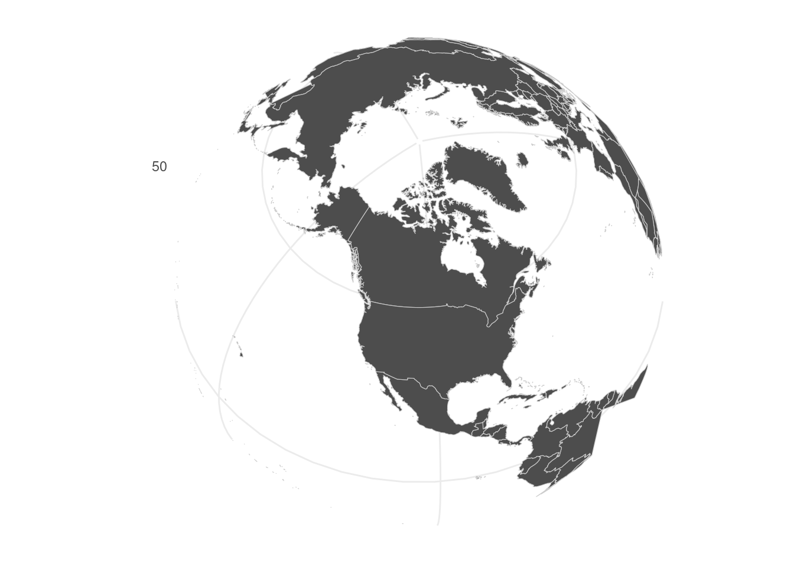

Becoming a Geographer: The Art of Creating Maps in R
Creating Maps with Projections in R?
1 Background
In this mini-project, I demonstrate how to make presentable maps using R. Often, researchers may require to visualise their data using maps. For instance, finance researchers and professionals may desire to visualise the extent of financial inclusion in different countries. Visualizations and exploratory data analysis (EDA) are some of the most overlooked tasks in data analysis. However, as John Tukey noted;
Numerical quantities focus on expected values, graphical summaries on unexpected values.
When dealing with data that has a spatial element, the ideal way to visualise such data is to create a map of the globe with different shades of color presenting the degree of inclusion or exclusion. Fortunately, R and the associated packages tidyverse, maps, mapproj makes such tasks easy to accomplish.
2 Objective
The objective of this project is to demonstrate how to create maps using R.
3 Preparing the Data
The ggplot package contains cordinates for maps. For instance, if a researcher aims to create a map of the globe, they can get the data by loading the tidyverse or ggplot packages and then invoking the function map_data(). This function takes the region of interest as the argument. To get the cordinates for the entire planet, we use map_data('world').
Code
global_data <- map_data('world') %>%
tibble()
head(global_data)# A tibble: 6 × 6
long lat group order region subregion
<dbl> <dbl> <dbl> <int> <chr> <chr>
1 -69.9 12.5 1 1 Aruba <NA>
2 -69.9 12.4 1 2 Aruba <NA>
3 -69.9 12.4 1 3 Aruba <NA>
4 -70.0 12.5 1 4 Aruba <NA>
5 -70.1 12.5 1 5 Aruba <NA>
6 -70.1 12.6 1 6 Aruba <NA> 4 Plotting the Data
We first create a flat map using this dataset.
Code
(my_base_map <- global_data %>%
ggplot() +
geom_map(mapping = aes(x = long, y = lat, map_id = region), map = global_data,
color = 'gray80', fill = 'gray30', size = 0.2) +
labs(x = "", y = "", title = "") + theme_minimal())Warning: Ignoring unknown aesthetics: x, y
However, the globe is round, hence we need to add some projections. The mapproj package contains map projections that could be utilised for this purpose. For convenience, let us work with the orthographic() projection. There are other projections including mercator(), sinusoidal() among others. Please run the code mapproj::mapproject for further information.
Code
my_base_map +
coord_map('ortho', orientation = c(8, 34, 0))Warning: Unknown or uninitialised column: `subgroup`.
Changing the orientation simply focuses the map on a different region. The orientation 8, 34, 0 focuses on Africa. We can focus on the UK by changing the orientation to 55.4, 3.4, 0. See below.
Code
#| echo: false
#| fig-width: 12
#| fig-height: 8
#| fig-cap: "Map Projection Focused on the UK: orthographic Projection"
my_base_map +
coord_map('ortho', orientation = c(55.4, 3.4, 0))Warning: Unknown or uninitialised column: `subgroup`.
Code
#| echo: false
#| fig-width: 12
#| fig-height: 8
#| fig-cap: "Map Projection Focused on the North America: orthographic Projection"
my_base_map +
coord_map('ortho', orientation = c(55, -105, 0))Warning: Unknown or uninitialised column: `subgroup`.
5 Conclusion
Making maps in R is quite easy. Once you combine the maps with your own data, it is possible to come up with an awesome visualization. Visualizations and exploratory data analysis (EDA) are some of the most overlooked tasks in data analysis. However, as John Tukey noted;
Numerical quantities focus on expected values, graphical summaries on unexpected values.
A well designed visual maybe all you need to prove your point.